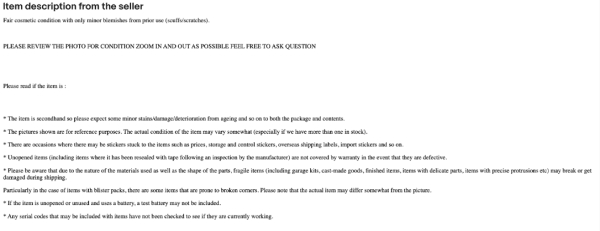
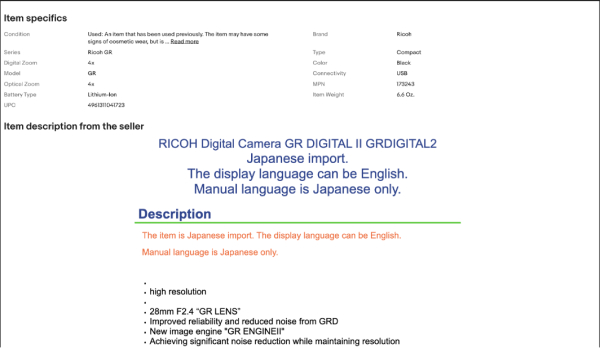
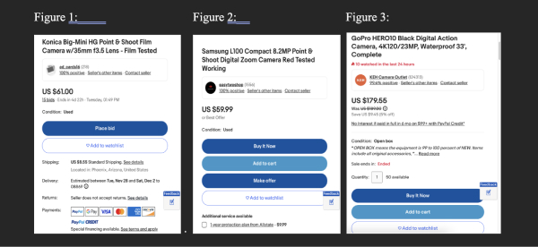
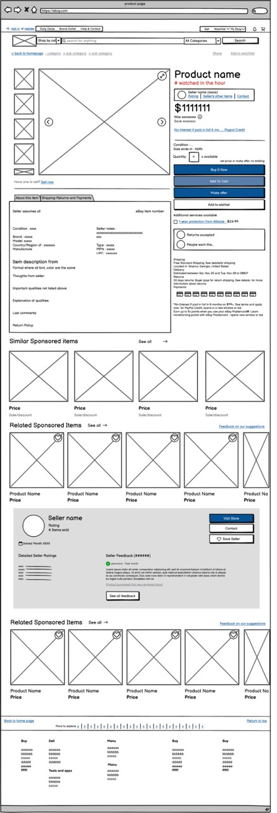
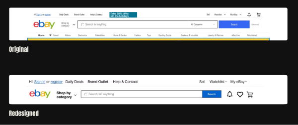
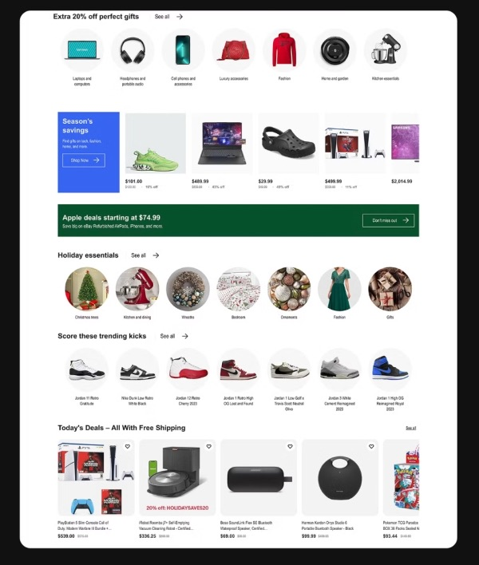
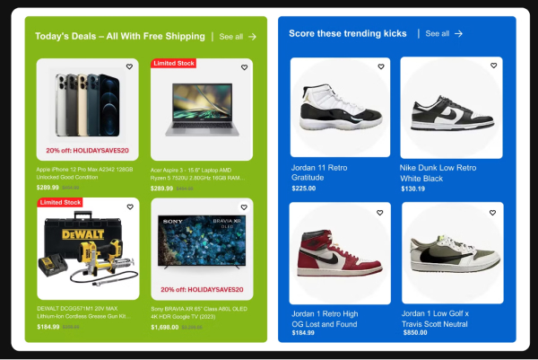
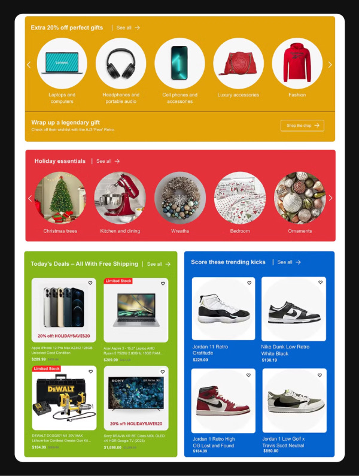
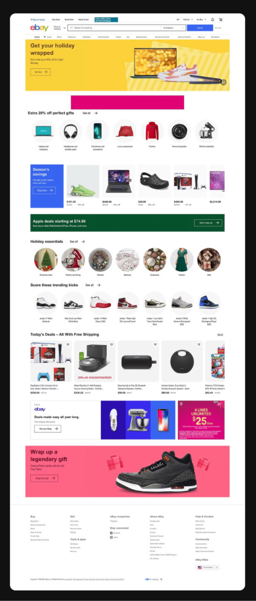

Project Goals
Our goal was to use Jakob Neilsen's Heuristics to evaluate the usability of Ebay's landing page and product page. We wanted to use this information to create recommendations that would help make the user experience easier. Ebay is a website that is extremely helpful for finding cheaper alternatives to retail prices, but is notorious for being confusing, so we thought it would be a great challenge to take on.
Product Page Critiques
I made three recommendations that would help reduce frustration and improve usability.
Conceptual Model and Product Description Placement
Since the seller’s information is placed further down the page, it forces users to scroll a lot to find out about the product before making a purchase. To make it easier for users to decide on their purchases, the product information should be moved further up on the page, as shown in Figure 2.
 Consistency in Product Description
There are two product descriptions that use different formats, fonts, and colors. This can be frustrating for users as inconsistency can cause confusion when anticipating a specific layout. Creating a standard format for all sellers on Ebay would make it easier for users to understand the descriptions and find the information they need to make a purchase.

Anti-affordance and Buying Options
Ebay has useful features for buying, bidding, and making offers, focusing on their marketplace concept. Sometimes it's hard to know what you can and can't do. The top image shows three different layouts with different functions, but they only explain what's possible, not what's not. This can confuse people about what they can do. I suggest adding a small text to explain the user's abilities, like in the bottom image.
In the end, I created a wireframe of the product page with all my recommendations in Balsamiq:
Collaboration of Ideas through Teamwork
When my group members and I reunited, most of my team chose to evaluate the home page. We used Figma to make a basic sketch of the original design, so we could visualize the recommendations we want to implement. The four main recommendations we made included:
- Navigation bar
- Consistency in color and branding
- Use of signifiers
- Information hierarchy
Issue 1: Navigation Bar
Looking at the navigation bar, we questioned the overall size of the menu. The original bar had 3 horizontal sections with a smaller font, approximately size 12 font.
Recommendation #1: Change bar to 2 sections to avoid redundancy
The bottom part of the navigation bar showed categories, while the middle section had a dropdown menu titled "shop by category" with the same categories. We removed the last row to avoid repeating this information and making the menu bar less cluttered.
Recommendation #2: Increasing Font Size
We initially had a font size of 16pt, but we increased it to 20pt to make the navigation bar more user-friendly. After removing the bottom section of the menu, there was space to further increase the font size, allowing easier ways for user discoverability as the navigation bar can better help guide them through the site.
Issue 2: Consistency
We critiqued that the color branding of Ebay's landing page did not align with their branding. Being primarily white, we believed that incorporating colors from their logo could help create a stronger brand sense. This also helps segment the information, allowing users to digest the information within each box and reduce frustration that could be caused when looking for a specific item.
Issue 3: Signifiers
The usability of Ebay has a large learning curve in terms of navigation and utilization of the marketplace. By implementing more signifiers and consistent interfaces, new users would be able to understand the products from a first glance and be able to find what they are looking for faster.
Recommendation #1: Implement "limited stock" tags
The most challenging part of using Ebay is figuring out if an item is unique or if there is a lot of stock. Adding a small tag on the image to indicate limited stock would help users make better decisions about purchasing the product in a timely manner.
Recommendation #2: Adding color to help direct the eye
Along with keeping item layouts the same, adding color helps show where to focus on the page while scrolling. It helps users identify important products in each box and visualize related products together.
Issue 4: Information Hierarchy
Overall, all these changes work together to help improve how users process information. We found it difficult to focus on each item because everything was set against a white background, making the site feel never-ending.
Grouping items within color blocks makes it easier for users to distinguish similarities and differences. Using bigger boxes, more space, and horizontal/vertical rectangles makes the grid more dynamic and engaging.
My Major Takeaways
Our final wireframe is linked and pictured here:
I think this project was interesting in how we used Don Norman's principles from his book, "The Design of Everyday Things", to evaluate the usability of Ebay's interfaces. While we read a lot about these principles, it was fun to actually apply them to something real and conceptualize them in our own words.
My main lesson from this project was how we used the double diamond framework. First, we came up with our own ideas and designs. Then we discussed common issues. After that, we individually thought about solutions and then came back together to create a final design. I believe this could be a very effective approach for future industry projects.
I also thought it was quite useful in learning how to use Balsamiq vs. Figma for wireframing. I like how Balsamiq provides all these pre-created components that many websites already use to speed up the wireframing process. I think it will be a very useful tool in the future.